This paper presents a novel spherical target-based LiDAR-camera extrinsic calibration method designed for outdoor environments with multi-robot systems, considering both target and sensor corruption. The method extracts the 2D ellipse center from the image and the 3D sphere center from the pointcloud, which are then paired to compute the transformation matrix. Specifically, the image is first decomposed using the Segment Anything Model (SAM). Then, a novel algorithm extracts an ellipse from a potentially corrupted sphere, and the extracted ellipse’s center is corrected for errors caused by the perspective projection model. For the LiDAR pointcloud, points on the sphere tend to be highly noisy due to the absence of flat regions. To accurately ex- tract the sphere from these noisy measurements, we apply a hierarchical weighted sum to the accumulated pointcloud. Through experiments, we demonstrated that the sphere can be robustly detected even under corruption, outperforming other targets. We evaluated our method using three different types of LiDARs (spinning, solid-state, and non-repetitive) with cameras positioned in three different locations. Furthermore, we validated the robustness of our method to target corruption by experimenting with spheres subjected to various types of degradation. These experiments were conducted in both a planetary test environment and a field environment.
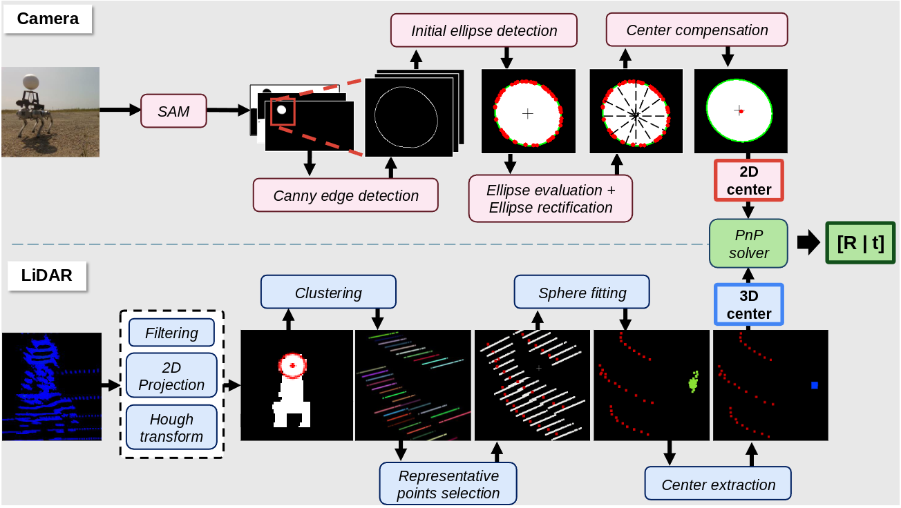
Overview of the proposed method. The camera pipeline (top) detects the spherical target and extracts its 2D center, while the LiDAR pipeline (bottom) estimates its 3D center.
For a single input image, SAM produces about 90—and sometimes well over 100—candidate mask images. Thanks to SAM, even small, damaged, or contaminated targets region can be reliably distinguished.
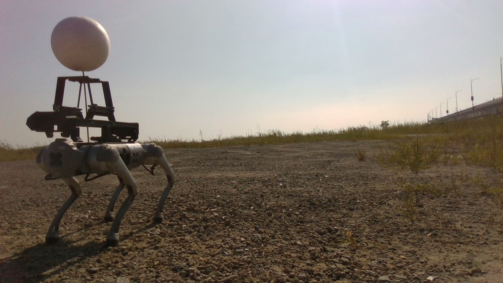
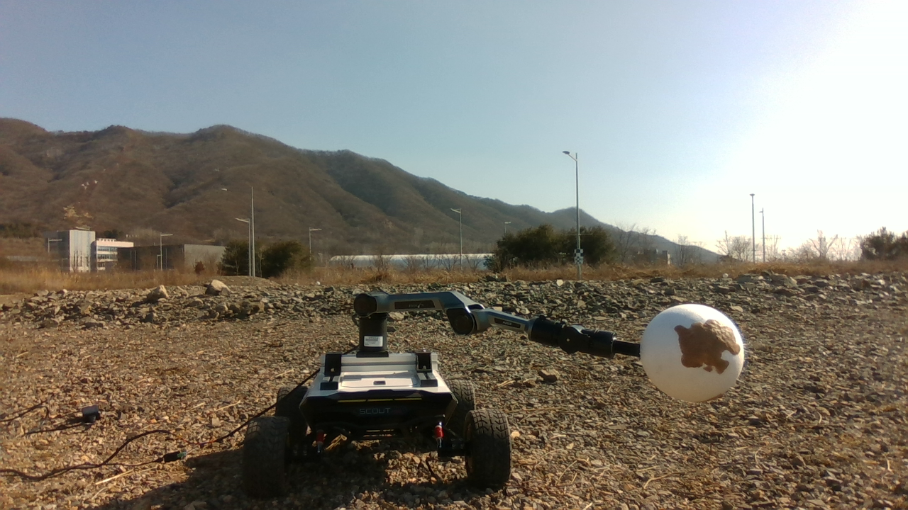
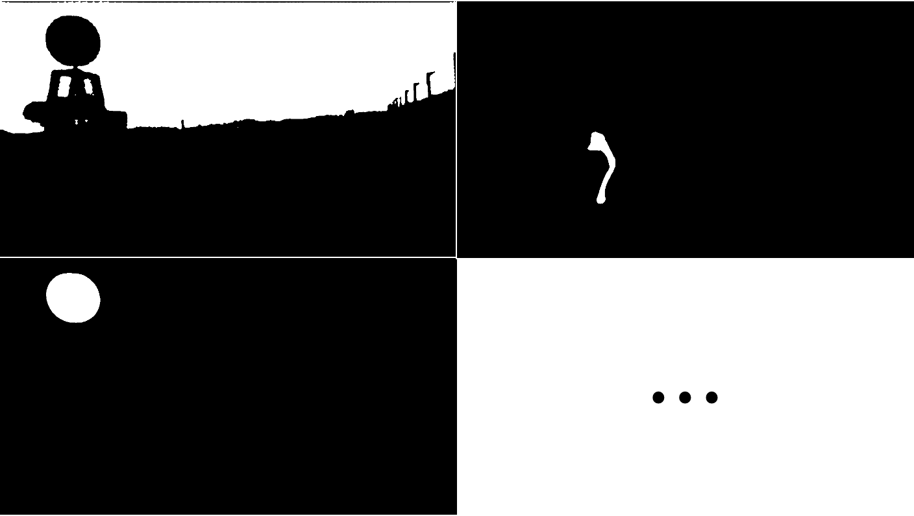
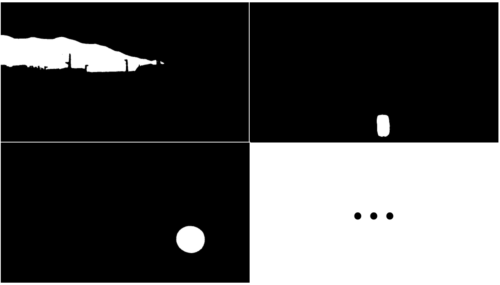
Apply Canny edge detection to every mask image.
Fit ellipse iteratively using points sampled from edge. If any sampled point lies inside the fitted ellipse, remove such points from the sampling pool, and re-fit the ellipse. If the sampling pool is exhausted before a valid ellipse is found, the algorithm concludes that the target is not present in the edge image.
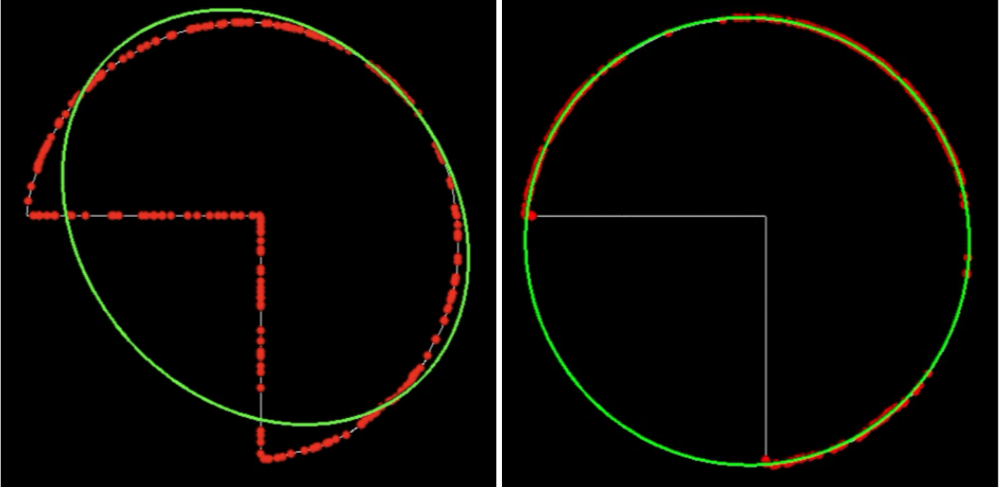
The left image shows an ellipse undergoing the detection process. Red dots indicate the sampled points. Sampled points that lie inside the fitted ellipse (green) are excluded from the sampling pool. The right image shows an ellipse that has been classified as valid.
The video demonstrates the initial ellipse detection process applied to spheres with varying degrees of damage. As shown in the video, even severely damaged ellipses can be successfully detected. However, there are cases where the detected ellipse differs in shape from the true ellipse. It can be observed that the more severely the ellipse is damaged, the greater its eccentricity becomes compared to that of the true ellipse.
At this stage, we determine whether the ellipse originates from (i) an intact sphere or (ii) a damaged sphere or a non-spherical object. To do so, we build an angle-based histogram of the sampled points: if the points are well distributed around the ellipse’s perimeter, the ellipse is deemed valid; otherwise, the ellipse forwarded to the next processing stage.
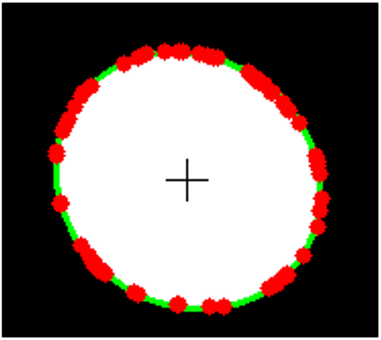
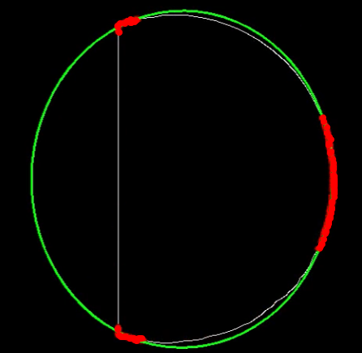
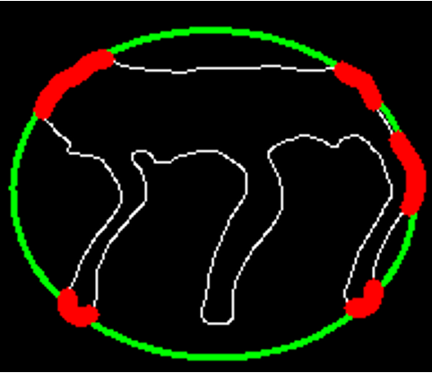
In the first image, the sample points are well distributed around the ellipse, indicating that it originates from an intact sphere. In the second and third images, however, the points cluster in specific regions, showing that the ellipse stems from a damaged target or a non-spherical object.
At this stage, we distinguish whether an ellipse stems from a damaged sphere or from a non-target object. To do so, we fit the ellipse using two types of samples: points randomly selected from each cluster and one point randomly drawn from the sampling pool.
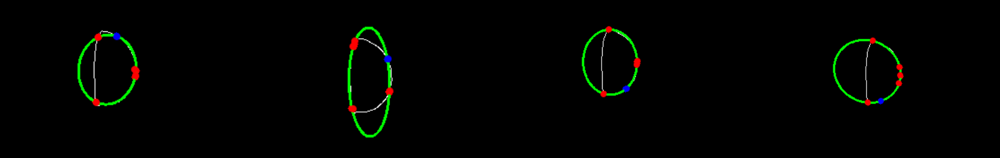
As illustrated in the figure above, the shape of the fitted ellipse varies depending on which points are randomly sampled. To recover the true ellipse, we use two sets of points: points from the intact regions of the initially detected ellipse (red dots) and point that—despite potentially originating from intact region—is excluded from the sampling pool during the fitting process (blue dots). As in the Initial Ellipse Detection stage, we seek a ellipse that contains no red inliers within fitted ellipse. If no such ellipse can be found, we conclude that the shape does not originate from a non-target object.
Due to the perspective projection model as depicted below, the true center of the sphere does not coincide with the center of its projected ellipse in the image. Therefore, in this step we use the ellipse’s center to compute the corresponding projection of the sphere’s 3D center onto the image.
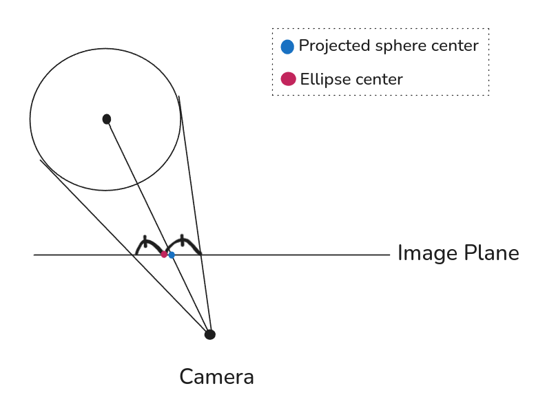
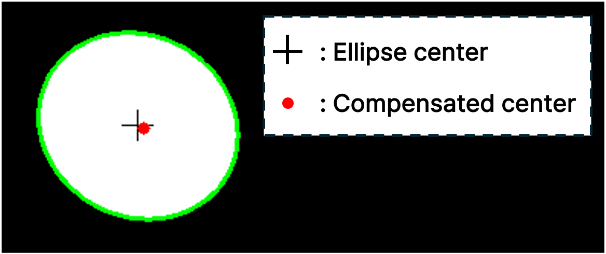
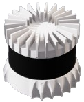
LiDARApply a Statistical Outlier Removal (SOR) filter to the aggregated point cloud and remove the ground plane, leaving only the robot and the spherical target.
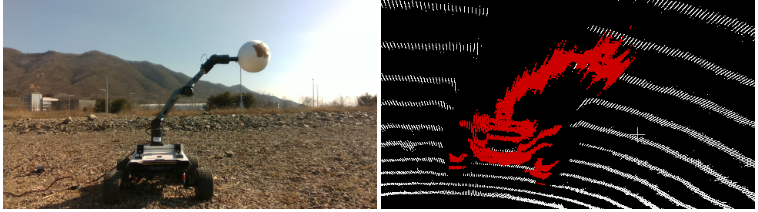
The left image shows the camera view, while in the right image, red points denote the segmented points belonging to the robot and the sphere, and white points correspond to the ground.
Project the previously obtained 3D points onto an image and apply a Hough transform to detect the circle. 3D point that projectss inside the circle is considered part of the sphere.
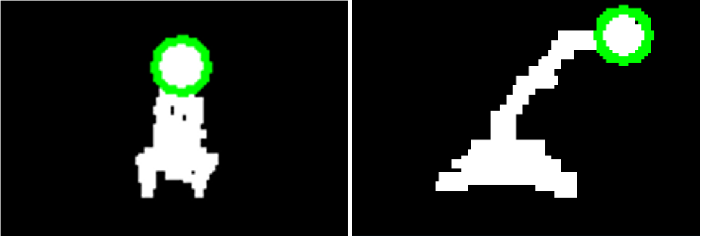
The image shows the target being captured on a quadruped robot (left) and a manipulator (right).
Since data is accumulated and due to the sphere's geometric characteristic that contains significant noise, we can identify clusters of points that accumulate at specific locations on its surface. In this process, we discard any cluster whose spatial extent exceeds a predefined length, indicating that it contains excessive noise.
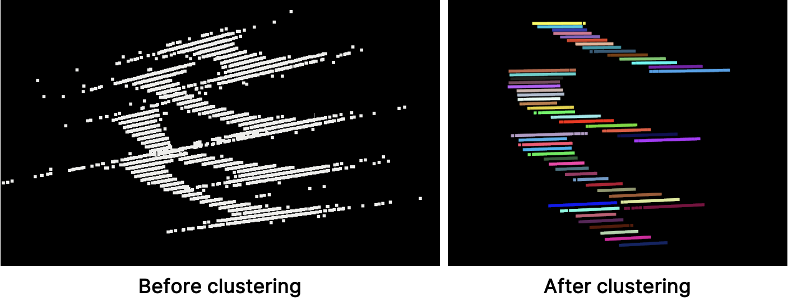
Divide each cluster into 2mm cells and apply a weighted sum to each cluster using cell's location and number of points in the cell as the weight.
Since four non‐coplanar points can uniquely define a sphere, we generate all 4-point combinations from the previously computed representative points and fit a sphere to each combination. We then compute the final sphere center as a weighted sum of the centers obtained from all combinations.
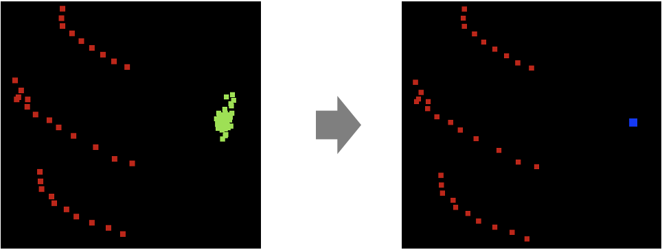
Red, green, and blue dot denote the representative points, candidate sphere centers, final sphere center, respectively.